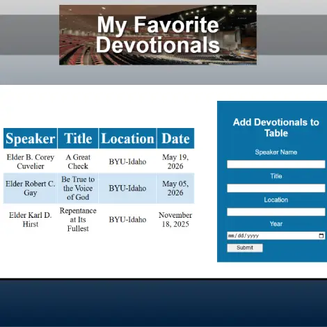
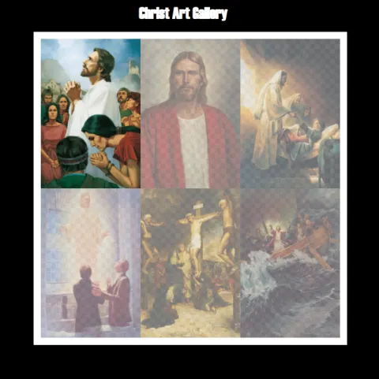
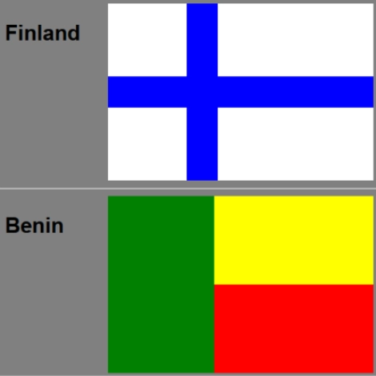
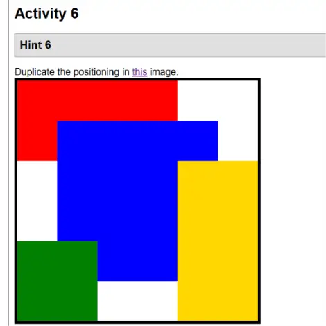

In Class Exercises (ICE)
Apostle Spotlight
I used a grid to format the First Presidency and apostles of the Church of Jesus Christ of Latter-Day Saints into an appealing format. We also used an image as a background and positioned it appropriately.
Fathers Day
I built a website for fathers day with prebuilt HTML. Each member of my class had a distinctive webpage despite the fact that all of our HTML is the exact same.

Favorite Devotional
I built and styled a table with HTML and CSS to display my favorite BYU-Idaho devotionals. I also built a form where other favorite devotionals can be entered.

Christ Art Gallery
I reduced the size of the images in the art gallery so that the website would load quickly.

Grid Flags
I used CSS Grids to build flags with pre-existing HTML. Each flag has a defined size and background colors were used to display the colors.

Positioning Exercises
I used CSS to position elements such that they matched a guide we were given. I primarily used a grid to complete the exercises.
Prophet Card
In my first ICE challenge, I built a card to introduce the Prophet of the Church of Jesus Christ of Latter-Day Saints, which included his image and one of his quotes.